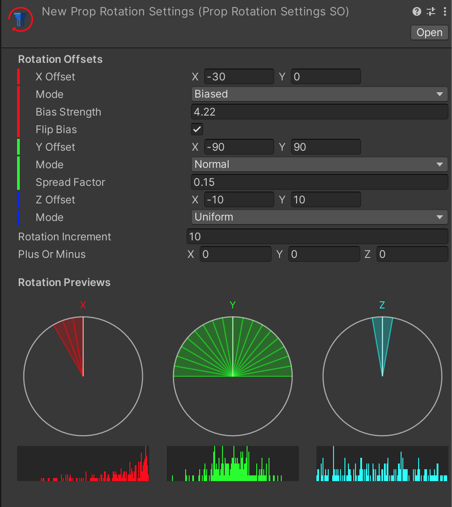

Prop Rotation Settings

By default, props match the rotation of the Prop Spot they are placed on. If you want to allow the prop to be rotated when placed, you can assign one in Prop Categories. To create a new asset, select “Assets/Create/MoraMapGen/Props/Prop Rotation Settings.”

The Rotation Offsets here work very similarly to placement variance offsets. (See Prop Spots)
Rotation Increment
If set to 0, any angle within the range could be randomly selected. If set to anything other than 0, rotations will be snapped to a multiple of this value and within the offset range.
Plus Or Minus
After a random rotation angle is selected, an additional offset can be applied in either direction, up to this amount. Example: You want a prop to always be facing roughly in one of the cardinal directions, so you set Rotation Increment to 90 with an offset range of -180,180, but you want the props to not be totally perfectly aligned, so you set Plus Or Minus to 1. That way all of these props are within 1 degree of a 90 degree increment.